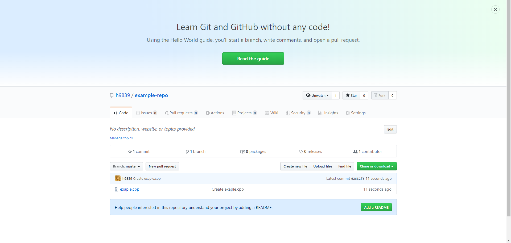

Westview Middle School | GitHub Tutorial
In this toutorial I will be showing you how to create your first git hub repository
On any page click the + in the upper right corner and select create reposotiry

Now give your repository a name a description and a README

Now you have to set up your repo with code, either hit set up in desktop or click upload an existing file to import a file from vexcode (recommended)

Now you are set up with your first file in your first respoitory
